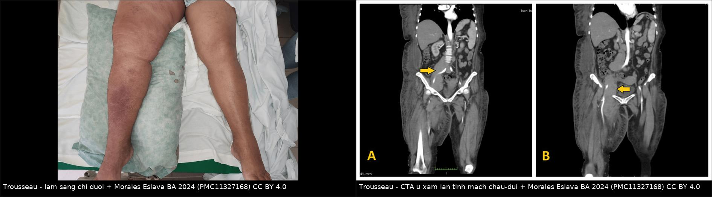
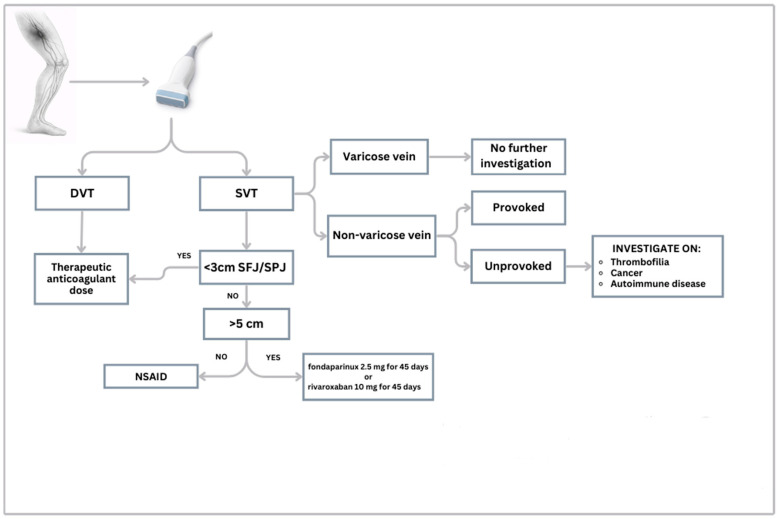
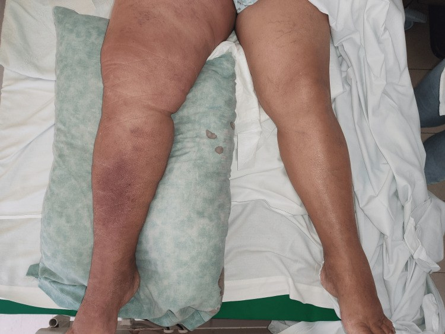
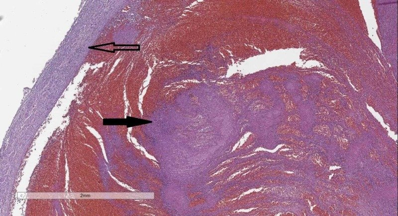

1693 — Thrombophlebitis migrans (hội chứng Trousseau) & huyết khối tĩnh mạch nông KHÔNG do giãn tĩnh mạch / Migratory thrombophlebitis (Trousseau syndrome) and non-varicose superficial vein thrombosis
Tags: pattern:day-cung-duoi-da pattern:di-chuyen-tai-phat pattern:huyet-khoi-tinh-mach-nong pattern:khong-gian-tinh-mach vung:chi-duoi vung:thanh-nguc vung:toan-than protocol:sieu-am-ep-tinh-mach protocol:Doppler-mau protocol:CTA-nguc-bung-chau incidentaloma:ung-thu-an
Mức chắc chắn (certainty): tổng hợp y văn (literature synthesis) — số liệu đọc trực tiếp từ toàn văn: tổng quan SVT không giãn tĩnh mạch (J Clin Med 2026, PMC12897798), đoàn hệ SVT đơn trung tâm (Res Pract Thromb Haemost 2024, PMC10770555), 2 ca Trousseau có ảnh (Cureus 2024 PMC11327168; Life 2024 PMC11433426), ca thrombophlebitis migrans tiền triệu (Ann Dermatol 2022 PMC9365648), tiêu bản tĩnh mạch chậu có huyết khối (Cureus 2019 PMC6819058); có ca nguyên văn cho quiz.
1. Tổng quan bệnh học – cơ chế hình ảnh
- Ba khái niệm phải tách rời:
- Huyết khối tĩnh mạch nông (superficial vein thrombosis, SVT) — huyết khối + viêm thành tĩnh mạch nông, thường ở chân, sờ thành dây cứng đỏ–đau.
- SVT trên nền giãn tĩnh mạch (varicose, VV) — cơ chế ứ trệ + thay đổi cấu trúc thành, tiên lượng tương đối lành.
- SVT KHÔNG do giãn tĩnh mạch (non-varicose, NVV) — gồm thể DI CHUYỂN/TÁI PHÁT = thrombophlebitis migrans, tức hội chứng Trousseau — cơ chế tăng đông hệ thống (u, tăng đông di truyền, bệnh tự miễn), tiên lượng nặng hơn hẳn.
- Vì sao "di chuyển" lại là dấu hiệu báo động: huyết khối không phải do ứ trệ tại chỗ mà do máu tăng đông toàn thân → huyết khối xuất hiện ở đoạn này, tự tan, rồi mọc ở đoạn khác theo chu kỳ. Ca nguyên văn: nốt đỏ–đau ở hai cổ tay, chi dưới và tinh hoàn, mỗi đợt tự thoái triển rồi tái phát theo chu kỳ ~1 tháng, kéo dài 4 tháng; sinh thiết da = huyết khối tĩnh mạch trung bì không viêm mạch, không hoại tử fibrinoid.
- Cơ chế tăng đông do u (định lượng cơ chế): tế bào u tăng biểu hiện yếu tố mô (tissue factor, TF) — chất khởi động con đường ngoại sinh; vi hạt (microparticle) mang TF; mucin của u gắn selectin trên tiểu cầu và nội mô; bẫy ngoại bào bạch cầu trung tính (NETs) hoạt hóa yếu tố XII. Vì vậy Trousseau gắn với u tụy, phổi, não, dạ dày, đường mật, và JAK2 V617F ở bệnh tăng sinh tủy.
- TẠI SAO siêu âm ép (compression ultrasound) là chốt (vật lý): tĩnh mạch nông bình thường xẹp hoàn toàn dưới lực ép của đầu dò; khi có huyết khối, lòng mạch không xẹp, trong lòng có hồi âm, không có dòng trên Doppler màu. Siêu âm còn đo được chiều dài huyết khối và khoảng cách tới ngã ba hiển–đùi/khển–khoeo — hai con số quyết định điều trị (ngưỡng 3 cm và 5 cm).
- Tần suất (định lượng): SVT có triệu chứng 0,64%/năm (KTC 0,55–0,74), từ 0,04% ở nam 18–39 tuổi tới 2,19% ở nữ ≥ 75 tuổi; NVV chiếm 20–60% tổng số SVT (STEPH 24% = 41/171; POST 20%; Utrecht 60,5%; INSIGHTS-SVT 24,4%).
- Vì sao NVV không phải "bệnh nhẹ": tại lúc chẩn đoán SVT, DVT đồng thời 24,6%, PE 4,7% (STEPH); OPTIMEV: NVV-SVT có DVT/PE đồng thời 39,4% vs 23,3% so với SVT trên giãn tĩnh mạch (p < 0,001); không có giãn tĩnh mạch là yếu tố nguy cơ ĐỘC LẬP cho VTE có triệu chứng ở 3 tháng (HR 2,06; KTC 1,01–4,25; p = 0,049); hồi cứu STEFLUX: NVV OR 2,6 (1,3–5,0; p = 0,007) cho VTE sau ngừng điều trị.
- Tăng đông di truyền/mắc phải: tỷ lệ cao gấp 2–3 lần so với người không có SVT; trong một loạt 73 ca NVV-SVT, 76% có tăng đông, 51% yếu tố V Leiden (khoảng nửa đồng hợp tử); một loạt khác: 74,2% ca SVT là NVV, sàng lọc tăng đông dương 53,4% (protein C 2,1%, protein S 6,2%, AT III 6,25%, FV 46,4%, prothrombin G20210A 21,4% — chỉ thể dị hợp).
- Ung thư: tỷ lệ ung thư 8,7% ở bệnh nhân SVT; 16,6% bệnh nhân SVT trong đoàn hệ 632 ca VTE có ung thư đang hoạt động; meta-analysis IROVAM-ISVT (8 nghiên cứu, 5.998 ca SVT): 448 ca (7,47%) có ung thư hoạt động, VTE 18,2/100 người–năm (RR 2,57 so với không ung thư), chảy máu nặng 2,0/100 người–năm, tử vong do mọi nguyên nhân 22,8/100 người–năm.
- Sinh tồn khi SVT có ung thư (OPTIMEV): tử vong 23,2%/người–năm (so với 2,0%/người–năm ở SVT không ung thư; aHR 0,1), tương đương ung thư có DVT (27,2%/người–năm); nếu ung thư + SVT + DVT đồng thời: 57,4%/người–năm. 44,3% bệnh nhân ung thư có SVT đã có DVT kèm theo → siêu âm tĩnh mạch sâu là bắt buộc.
2. Mẫu hình + chẩn đoán phân biệt theo vị trí (Gamut)
- Khuôn 1 — Dây cứng đỏ–đau ở chân, KHÔNG có giãn tĩnh mạch, tái phát hoặc nhiều dây. Gamut: SVT không giãn tĩnh mạch / Trousseau vs SVT trên giãn tĩnh mạch vs DVT lan theo tĩnh mạch nối vs viêm mô tế bào vs nhiễm trùng mô mềm. Chốt: không xẹp + hồi âm trong lòng, đo khoảng cách tới SFJ/SPJ.
- Khuôn 2 — Dây di chuyển, nhiều đợt, hai bên, nhiều vị trí (chân + tay + thân). Gamut: Trousseau (u tạng) vs bệnh Behçet vs viêm tắc động mạch (Buerger) vs hội chứng kháng phospholipid vs tăng đông di truyền. Chốt: tổn thương ở nhiều vùng giải phẫu cùng lúc + không giãn tĩnh mạch; Behçet có loét sinh dục/miệng, viêm màng bồ đào; Buerger ở nam hút thuốc nhiều.
- Khuôn 3 — Dây ở thành ngực/vú, một bên, tự khỏi 4–8 tuần. Gamut: bệnh Mondor vs thể di chuyển của Trousseau vs viêm bạch mạch vs di căn da. Chốt: Mondor một dây, một bên, tự khỏi; tái phát/hai bên → tầm soát hệ thống.
- Khuôn 4 — Dây ở tay/cẳng tay, có catheter/kim truyền. Gamut: SVT do catheter (hóa chất, TPN, vancomycin, KCl đậm đặc) vs SVT nhiễm khuẩn có mủ (suppurative SVT) vs Trousseau. Chốt: vị trí đúng đường truyền; sốt + mủ + cấy máu dương → suppurative SVT, phải cắt đoạn tĩnh mạch nhiễm.
- Khuôn 5 — Dây ở dương vật/thân mình. Gamut: Mondor dương vật vs viêm xơ bạch mạch (sclerosing lymphangitis) vs di căn/u. Chốt: vị trí giải phẫu + không đáp ứng kháng sinh.
- Khuôn 6 — SVT + đau ngực/khó thở. Gamut: PE từ SVT vs nhồi máu phổi vs viêm màng phổi. Chốt: CTPA; PE 4,7% ngay lúc chẩn đoán SVT.
- Gợi nhớ "MIGRANS": Một bên rồi đổi bên · Idiopathic/không giãn tĩnh mạch (NVV) · Giãn tĩnh mạch KHÔNG có · Recur (tái phát theo chu kỳ) · Age > 60 · Neoplasia (u ẩn) · Sàng lọc tăng đông + tự miễn.
3. Bảng so sánh phân biệt (ma trận đối chiếu)
| Thực thể (entity) | Hình ảnh điển hình (SA ép / Doppler / CT) | Chốt vào (rule-in) | Chốt loại (rule-out) | Gợi ý xác nhận |
|---|---|---|---|---|
| SVT không giãn tĩnh mạch / Trousseau | Ống nông không xẹp, hồi âm trong lòng, không dòng; nhiều đoạn, nhiều trục, hai bên; tĩnh mạch nền không giãn, thành mỏng | NVV + tái phát/di chuyển/multi-vein; huyết khối dài ≥ 5 cm hoặc cách SFJ/SPJ < 3 cm | Có giãn tĩnh mạch rõ, một dây đơn độc, tự khỏi → SVT trên VV | SA ép toàn trục + đo chiều dài/khoảng cách; siêu âm lặp trong 14 ngày; tầm soát u/tăng đông có chọn lọc |
| SVT trên giãn tĩnh mạch | Tĩnh mạch giãn, thành dày, dòng trào ngược; huyết khối trong nhánh giãn | Tiền sử giãn tĩnh mạch + trào ngược trên Doppler | Tĩnh mạch nền bình thường → nghĩ NVV | SA + Doppler; điều trị theo triệu chứng |
| DVT lan từ SVT | Huyết khối liên tục từ tĩnh mạch nông vào tĩnh mạch sâu qua ngã ba; tĩnh mạch sâu không xẹp | Huyết khối trong lòng tĩnh mạch sâu (đùi/khoeo) | Tĩnh mạch sâu xẹp hoàn toàn, có dòng | SA ép tĩnh mạch sâu cùng lúc; CTPA nếu có triệu chứng |
| Behçet | Huyết khối nhiều ổ, hai bên, tái phát, có thể phình mạch; viêm toàn thành 3 lớp | Loét miệng/sinh dục tái phát + tổn thương mắt/da + huyết khối nhiều ổ | Không có loét niêm mạc, không viêm mắt | Khám lâm sàng + HLA-B51; kháng đông + ức chế miễn dịch |
| Viêm tắc động mạch (Buerger) | Tắc động mạch nhỏ–vừa ngọn chi + SVT di chuyển 40% | Nam trẻ, hút thuốc nặng + thiếu máu ngón + SVT di chuyển | Mạch ngoại vi bình thường, không hút thuốc | Chụp mạch (dấu "bậc thang"/corckscrew); bắt buộc bỏ thuốc |
| SVT nhiễm khuẩn (suppurative) | Ống nông không xẹp + dịch/mủ quanh tĩnh mạch, khí trong mô | Sốt + mủ + cấy máu dương (S. aureus/MRSA) | Không sốt, không mủ | Cấy máu + SA; kháng sinh + cắt đoạn tĩnh mạch |
| SVT do catheter | Ống không xẹp đúng vị trí catheter, đoạn ngắn | Tiền sử truyền hóa chất/TPN/dung dịch > 800–900 mOsm/L | Không can thiệp tại chỗ | SA tại chỗ; rút/thay đường truyền |
| Bệnh Mondor | Một dây thành ngực/vú, không xẹp, không dòng; nhũ ảnh có thể bất đối xứng tuyến tính | Một bên, một dây, tự khỏi 4–8 tuần | Nhiều dây, hai bên, tái phát → không phải Mondor đơn thuần | SA + nhũ ảnh (bài 1691); tầm soát nếu tái phát |

Trái: chi dưới phải sưng, đỏ, đau — dấu hiệu "gửi" (sentinel). Phải: CTA bụng–chậu: khối u xâm lấn trực tiếp tĩnh mạch chậu ngoài và tĩnh mạch–động mạch đùi phải (mũi tên) — nguyên nhân gây huyết khối do chèn ép + tổn thương nội mạc, không phải do ứ trệ. Nguồn: Morales Eslava BA, Becerra Bello J., Cureus 2024, Fig. 1–2 (CC BY 4.0).4. Protocol chụp + thuật toán điều trị
Bước 1 — Siêu âm ép toàn bộ trục tĩnh mạch nông, HAI BÊN (bắt buộc):
- Đầu dò thẳng 7–12 MHz, quét từ mắt cá lên bẹn theo hiển lớn và từ khoeo theo hiển bé, cộng các nhánh; luôn quét tĩnh mạch sâu cùng lúc (đùi, khoeo) vì DVT đồng thời 8,7% ngay cả khi không triệu chứng (11/19 ca là DVT gần).
- Ghi 4 con số quyết định: chiều dài huyết khối (cm) · khoảng cách tới SFJ/SPJ (cm) · số trục tĩnh mạch bị huyết khối · có/không huyết khối tĩnh mạch sâu.
- Siêu âm lặp lại trong 14 ngày (huyết khối lan là biến cố sớm, 71,4% biến cố xảy ra trong tháng đầu).
Bước 2 — Phân tầng theo 2 ngưỡng 3 cm và 5 cm:
- < 3 cm tới SFJ/SPJ hoặc có DVT → coi như DVT: kháng đông liều ĐIỀU TRỊ.
- > 3 cm và chiều dài ≥ 5 cm → fondaparinux 2,5 mg/ngày × 45 ngày hoặc rivaroxaban 10 mg/ngày × 45 ngày; LMWH liều trung gian 30 ngày là lựa chọn thay thế.
- < 5 cm, nguy cơ thấp → NSAID + theo dõi là đủ (không kháng đông).
Bước 3 — Có tầm soát ung thư không? (câu hỏi hay bị làm sai cả hai phía):
- KHÔNG tầm soát ung thư toàn diện cho mọi SVT đơn độc, không rõ nguyên nhân: nghiên cứu bệnh–chứng 277 ca SVT vs 553 chứng, theo dõi 24 tháng → ung thư mới 2% (5/250) vs 2% (10/504), SMR 1,1 (KTC 0,5–2,7) — không tăng có ý nghĩa.
- CÓ tầm soát khi có "cờ đỏ": hai bên (RR 8,38) · nhiều trục (RR 2,42) · gần ngã ba < 3 cm (RR 2,01) · SVT gần gốc (proximal) (RR 1,54) · huyết khối lan nhanh (RR 5,75) · tái phát/di chuyển · tuổi cao · nam. Khi đó: CT ngực–bụng–chậu có cản quang + xét nghiệm máu + tầm soát theo triệu chứng.
- Tầm soát tăng đông (theo hướng dẫn Brazil và Hội Angiology quốc tế): SVT không giãn tĩnh mạch sau khi loại trừ u, tiến triển dù đã điều trị đủ, tái phát, nghi bệnh tự miễn → yếu tố V Leiden, prothrombin G20210A, protein C/S, AT III, kháng phospholipid.
- Không quên Behçet/Buerger: tổn thương mạch gặp tới 40% ca Behçet và có thể xuất hiện trước khi đủ tiêu chuẩn chẩn đoán; 40% ca Buerger có SVT, thường di chuyển.
Bước 4 — Điều trị và theo dõi (số liệu thử nghiệm):
- CALISTO (n = 3.002): fondaparinux 2,5 mg × 45 ngày — biến cố chính 0,9% vs 5,9% (giảm nguy cơ tương đối 85%, p < 0,001); chảy máu nặng 0,7% vs 1,1%.
- SURPRISE (n = 472): rivaroxaban 10 mg không thua kém fondaparinux 2,5 mg ở 45 ngày; không có chảy máu nặng ở cả hai nhánh.
- STEFLUX (n = 664): LMWH liều trung gian 30 ngày cho biến cố 1,8%, so với 15,6% (10 ngày) và 7,3% (liều dự phòng 30 ngày).
- INSIGHTS-SVT (n = 1.159): 3 tháng — SVT lan/tái phát 4,7%, DVT 1,7%, PE 0,8%; fondaparinux ≥ 38 ngày tốt hơn LMWH (3,7% vs 10,5%, HR 0,37).
- Vì sao KHÔNG dùng warfarin đơn thuần ở ung thư: ca 72 tuổi dưới đây được enoxaparin 1 mg/kg mỗi 12 giờ + warfarin, ra viện chỉ với warfarin, và tử vong do thuyên tắc phổi 2 tháng sau — ung thư cần LMWH hoặc DOAC, không phải kháng vitamin K đơn độc.
- Theo dõi: khám + siêu âm lại ở 2 tuần, 3 tháng; ở bệnh nhân ung thư, nguy cơ VTE vẫn cao suốt 1 năm (HR 2,40; KTC 1,30–4,45; p = 0,005) — cân nhắc kéo dài kháng đông theo từng ca.
flowchart TD
A[Day cung do-dau o chi hoac than] --> B[Sieu am ep toan truc + Doppler HAI BEN]
B --> C{Co huyet khoi tinh mach sau?}
C -->|Co| D[Khang dong lieu DIEU TRI, coi nhu DVT]
C -->|Khong| E{Khoang cach toi SFJ/SPJ}
E -->|< 3 cm| D
E -->|>= 3 cm| F{Chieu dai huyet khoi}
F -->|< 5 cm| G[NSAID + theo doi, sieu am lai 14 ngay]
F -->|>= 5 cm| H[Fondaparinux 2,5 mg x 45 ngay hoac rivaroxaban 10 mg x 45 ngay]
H --> I{Tinh mach nen KHONG gian?}
I -->|Co| J[Kiem tra co do: hai ben, nhieu truc, tai phat, di chuyen]
J --> K[CT nguc-bung-chau + tam soat tang dong + tu mien]
I -->|Khong| L[SVT tren gian tinh mach: dieu tri theo trieu chung]

Thuật toán: SVT → kiểm tra < 3 cm tới SFJ/SPJ (→ kháng đông liều điều trị) → chiều dài ≥ 5 cm (→ fondaparinux 2,5 mg hoặc rivaroxaban 10 mg × 45 ngày) → nếu tĩnh mạch không giãn và không rõ nguyên nhân → tầm soát tăng đông, ung thư, bệnh tự miễn. Nguồn: Mangiafico M, Di Pino FL, Costanzo L., J Clin Med 2026, Fig. 2 (CC BY 4.0).5. Biến thể bình thường và cạm bẫy
- Tĩnh mạch nông bình thường xẹp hoàn toàn khi ép — nếu ống vẫn xẹp thì không phải huyết khối, dù sờ thấy "dây". Dây có thể là cân cơ, gân, thần kinh, bạch mạch.
- Đừng đoán "giãn tĩnh mạch" bằng mắt: NVV nghĩa là tĩnh mạch nền không giãn/không trào ngược trên Doppler — nhiều ca "chân bình thường" vẫn là NVV, và chính không có giãn tĩnh mạch mới là yếu tố nguy cơ.
- Chỉ siêu âm đoạn đau là sai: huyết khối lan theo trục và có thể đã vào tĩnh mạch sâu ở đoạn không đau; 8,7% ca không triệu chứng DVT, trong đó 11/19 là DVT gần.
- Hai bên hoặc nhiều trục = đừng dừng ở "SVT": RR 8,38 (hai bên) và RR 2,42 (nhiều trục) cho ung thư hoạt động — đây là chỉ định tầm soát, không phải "thể nặng của cùng bệnh".
- Warfarin đơn thuần ở bệnh nhân ung thư là bẫy: ca nguyên văn tử vong do PE sau 2 tháng; ưu tiên LMWH/DOAC, và điều trị kéo dài khi u còn hoạt động.
- Không phải mọi SVT đều cần kháng đông: < 5 cm, > 3 cm cách ngã ba, không ung thư → NSAID là đủ; kháng đông thêm nguy cơ chảy máu mà không giảm biến cố.
- "Di chuyển" không đồng nghĩa ung thư: Behçet, Buerger, APS, tăng đông di truyền đều cho hình ảnh giống; không được mặc định "chắc chắn có u" rồi bỏ qua bệnh tự miễn — và ngược lại, không được trấn an khi tổn thương hai bên/tái phát.
- Suppurative SVT dễ bị gọi là "viêm mô tế bào": nếu sốt + mủ dọc tĩnh mạch + cấy máu dương, phải cắt đoạn tĩnh mạch nhiễm — kháng sinh đơn thuần sẽ tái phát và có nguy cơ tắc mạch nhiễm khuẩn.
6. Tự lượng giá — Blind Quiz
Ca 1 — Nữ 72 tuổi, chi dưới phải sưng–đỏ–đau 1 tuần, hạch bẹn 3–6 cm cố định.

- Hỏi: mô tả dấu hiệu? Cần chụp gì ngoài siêu âm tĩnh mạch? Chẩn đoán có thể là gì và vì sao "hạch bẹn" lại quan trọng?
Bấm để hiện đáp án (findings + chẩn đoán)
- Dấu hiệu: chi dưới phải sưng to, đỏ, tăng nhiệt, so với bên trái; đau khi sờ nông và sâu; mạch mu chân còn nhưng yếu. Kèm nhiều hạch bẹn 3–6 cm, cố định, không đau.
- Chẩn đoán: hội chứng Trousseau do lymphoma không Hodgkin độ cao (Burkitt) — siêu âm Doppler: huyết khối tĩnh mạch đùi lan tới tĩnh mạch chậu chung; CTA: u xâm lấn tĩnh mạch chậu ngoài và tĩnh mạch/động mạch đùi phải.
- Vì sao: huyết khối do u chèn ép + tổn thương nội mạc, không do ứ trệ → phải chụp CTA/MRI vùng chậu khi thấy hạch hoặc SVT không giải thích được. Điều trị: enoxaparin 1 mg/kg mỗi 12 giờ; ca này ra viện chỉ với warfarin và tử vong do PE 2 tháng sau → bài học: ung thư cần LMWH/DOAC.
- Nguồn ảnh: Morales Eslava BA, Becerra Bello J., Cureus 2024, Fig. 1 (CC BY 4.0).
Ca 2 — Nam 70 tuổi, nốt đỏ–đau ở hai cổ tay, hai chân và tinh hoàn, mỗi đợt tự khỏi rồi tái phát sau ~1 tháng, kéo dài 4 tháng.

- Hỏi: mô bệnh học (ảnh) cho thấy gì? Chẩn đoán? Cần tầm soát gì và vì sao không chỉ theo dõi?
Bấm để hiện đáp án
- Dấu hiệu (mô bệnh, ảnh minh họa cơ chế): thành tĩnh mạch (mũi tên rỗng) và huyết khối hỗn hợp lấp lòng (mũi tên đặc) — hình thái của huyết khối tĩnh mạch kèm xâm nhập tế bào; ở ca gốc, sinh thiết da cho huyết khối tĩnh mạch trung bì, không viêm mạch, không hoại tử fibrinoid.
- Chẩn đoán: thrombophlebitis migrans — ở ca gốc là tiền triệu của ATL thể smoldering (HTLV-1): bạch cầu 9.580/µL với 3% tế bào lympho bất thường, LDH/IL-2R tăng (2.498 U/mL), provirus HTLV-1 đơn dòng.
- Vì sao không chỉ theo dõi: tổn thương di chuyển, tự khỏi rồi tái phát theo chu kỳ = tăng đông hệ thống. Ca gốc được đổi sang rivaroxaban → huyết khối hết, không tái phát; nhưng bệnh nền (ATL) tiến triển và tử vong sau 39 tháng — điều trị kháng đông che triệu chứng, không thay điều trị u.
- Nguồn ảnh: Stoyanov GS, Dzhenkov DL, Tzaneva M., Cureus 2019, Fig. 3 (CC BY 4.0) — ảnh minh họa cơ chế huyết khối trong lòng tĩnh mạch, không phải tiêu bản của ca ATL.
Ca 3 — Nam 44 tuổi, tiền sử 6 tháng DVT + viêm tắc tĩnh mạch nông tái diễn, nay đau hạ sườn phải.
Bấm để hiện đáp án
- Dấu hiệu: siêu âm bụng: khối giảm âm 8,5 × 5,5 cm thùy phải gan, bờ không rõ + nốt giảm âm có quầng; CEUS: ngấm thì động mạch sớm; CT: khối 12 cm, xâm lấn; mô bệnh: adenocarcinoma, hoại tử, phản ứng xơ hóa mạnh.
- Chẩn đoán: ung thư đường mật trong gan (intrahepatic cholangiocarcinoma) biểu hiện bằng huyết khối tĩnh mạch nông + DVT tái diễn 6 tháng trước đó — tức Trousseau là dấu hiệu đi trước chẩn đoán u.
- Vì sao: CCA bài tiết mucin + TF → tăng đông; SVT không giãn tĩnh mạch, tái phát là "cờ đỏ" đòi hỏi CT ngực–bụng–chậu. Bài gốc tìm được 20 ca ung thư đường mật có huyết khối xa trong 19 bài — mức bằng chứng rất thấp, nhưng hướng đi là rõ.
- Nguồn: Ciobica ML và cs., Life 2024 (PMC11433426).
Bài liên quan chéo
- 1691 – Bệnh Mondor: huyết khối tĩnh mạch nông vú – thành ngực
- 1692 – U tuyến núm vú & erosive adenomatosis
- 070 – Thuyên tắc phổi & nhồi máu phổi cấp
- 163 – Pylephlebitis & huyết khối tĩnh mạch mạc treo
- 1697 – Hội chứng tăng đông của Cushing: VTE chu phẫu
- 170 – Phình động mạch chủ bụng
Không dùng để chẩn đoán độc lập khi chưa có người hướng dẫn.